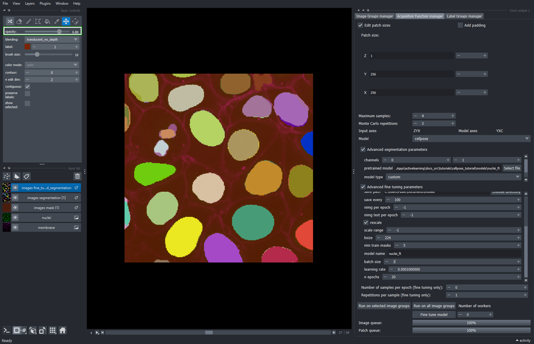

Tutorial: How to fine tune a Cellpose model with the Active Learning plugin for Napari
3.1. Add the Acquisition function configuration widget to napari’s window
The Acquisition function configuration is under the Active Learning plugin in napari’s plugins menu.
Plugins > Active Learning > Acquisition function configurationTip
All Active Learning widgets can be un-docked from their current place and re-docked into other more convenient location within napari’s window, or even as tabs, as illustrated in this tutorial.
About the Acquisition function configuration
The Acquisition function configuration widget comprises the processes of inference and fine tunning of deep learning models.
This tool allows to define the sampling configuration used to retrieve patches from the input image at random. Such configuration involves the size on each dimension of the patches, the maximum number of patches that can be sampled from each image, and the order of the axes that are passed to the model’s inference function. Parameters for such model can also be configured within this widget.
The fine-tuning process can also be configured and launched from within this widget. Finally, this widget executes the inference process on the same sampled patches to compare the base and fine-tuned model performance visually.

:::
::::
3.3. Set the size of the sampling patch

- Click the “Edit patch size” checkbox
- Change the patch size of “X” and “Y” to 256, and the “Z” axis to 1.
Note
This directs the Active Learning plugin to sample at random patches of size \(256\times256\) pixels and \(1\) slice deep.
3.4. Define the maximum number of samples to extract

- Set the “Maximum samples” to \(4\) and press Enter
Note
This tells the Active Learning plugin to process at most four samples at random from the whole image.
Because the image is of size \(256\times256\) pixels, four whole slices will be sampled at random for segmentation.
3.6. Execute the segmentation method on all image groups
- Click the “Run on all image groups” button
Note
To execute the segmentation only on specific image groups, select the desired image groups in the Image groups manager widget and use the “Run on selected image groups” button instead.

3.7. Inspect the segmentation layer
- We will only see four segmented slices from the whole image. This is because we set the “Maximum samples” parameter to \(4\) in Section 3.3.
Note
Because the input image is 3D, you may have to slide the “Z” index at the bottom of napari’s window to look at the samples that were segmented.
About the newly added layers
Three new layers were added to the napari’s layers list after executing the segmentation pipeline.
The “images acquisition function” presents a map of the confidence prediction made by the chosen model for each sampled patch. Lighter intensity correspond to regions where the annotator should pay attention when correcting the output labels, since those are low-confidence predictions. On the other hand, darker intensity corresponds to high-confidence predictions, and correcting these labels would not have much impact in the performance of the fine-tuned model as correcting low-confidence (lighter intensity) regions.
The “images sampled positions” show a low-resolution map of the regions that were sampled during the segmentation process.
The “images segmentation” layer are the output labels predicted by the model.
Note that the name of those three generated layers contain the name of the image group from where those patches were sampled, in this case the “images” image group.

4.1. Create a mask to restrict the sampling space
Switch to the Image groups manager tab
Click the “Edit mask properties” checkbox
Set the mask scale to \(256\) for the “X” and “Y” axes, and a scale of \(1\) for the “Z” axis
Click the “Create mask” button
Note
This creates a low-resolution mask where each of its pixels corresponds to a \(256\times256\) pixels region in the input image. Because the mask is low-resolution, it uses less space in memory and disk. The new mask will appear as “images mask (1)” since there already exists one mask that was generated automatically when running the segmentation method in step Section 3.5.

4.2. Specify the samplable regions
Make sure the newly created layer “images mask (1)” is selected.
Activate the fill bucket tool (or press 4 or F keys in the keyboard as shortcuts).
Click the image to draw the mask on the current slice.
Move the slider at the bottom of napari’s window to navigate between slices in the “Z” axis. Select slice \(28\) and draw on it as in step \(3\). Repeat with slices \(29\) and \(30\).

4.3. Execute the segmentation process on the masked regions
- Return to the Acquisition function configuration tab and run the segmentation process again (clicking “Run on all image groups” button).

4.4. Inspect the results from the segmentation applied only to masked regions
- All slices between \(27\) and \(30\) were picked and segmented thanks to the sampling mask!
Note
At this point, multiple layers have been added to napari’s layers list and it could start to look clutered.
The following layers will be used in the remainder of this tutorial: “membrane”, “nuclei”, “images mask (1)”, and “images segmentation [1]”.
The rest of the layers can be safely removed from the list (i.e. “images acquisition function [1]”, “images acquisition function”, “images mask”, and “images segmentation”).

5.3. Use napari’s layer controls to make changes on the objects of the current patch
- Select the label associated to the patch extracted at slice \(27\). That label can be found by looking for the coordinate \((0, 0, 27, 0, 0)\) in the “Sampling top-left” column of the label groups manager table.
Note
This creates a new editable “Labels edit” layer with a copy of the selected patch.
Make sure the “Labels edit” layer is selected.
Edit the labels on the current patch with
napari’s annotation tools.
How to use the annotation tools
Select the pick mode tool (click the dropper icon or press key 5 or L on the keyboard) and click on an object in the current patch to get its label index.
Use the paint brush (click the brush icon or press key 2 or P on the keyboard) and add pixels missed by the model.
Remove extra pixels with the label eraser tool (click the eraser icon or press key 1 or E on the keyboard).
If an object was not segmented at all, press the M key on the keyboard to get the next unused label index, and use the paint brush as in step \(2\) to cover the pixels of that object.
For a more complete guide on annotation with napari follow this tutorial.
- Click the “Commit changes” button when finished editing.

5.5. Select the layer group that will be used as labels for fine-tuning
- Go to the image groups manager widget and select the “segmentation (1)” layers group.
Tip
The “Group name” column in the groups table can be resized to show the complete names.
- Open the Edit group properties view (clicking on the checkbox) and tick the “Use as labels” checkbox.
Note
Any layers group can be used as labels for the fine-tuning process, just make sure the layer type is appropriate for the training workflow of the model to fine-tune.
In this tutorial, the labels must be of napari.layers.Labels type.

5.6. Setup fine tuning configuration
- Change the “model name” to “nuclei_ft”
Tip
Scroll the Advanced fine tuning parameters widget down to show more parameters.
Set the “batch size” to \(3\)
Change the “learning rate” to \(0.0001\)
Tip
You can modify other parameters for the training process here, such as the number of training epochs.

5.7. Execute the fine tuning process
Double check the fine-tuning parameters!
Because spin boxes in this widget can be modified by hovering and scrolling with the mouse, it is possible to change their values when scrolling down the parameters window.
Make sure that the parameters are the same as the shown in the following screenshot, particularly the size of the crops used for data augmentation (bsize), and the number of images per epoch (nimg per epoch).

- Click the “Fine tune model” button to run the training process.
Caution
Depending on your computer resources (RAM, CPU), this process might take some minutes to complete. If you have a dedicated GPU device, this can take a couple of seconds instead.

6.3. Segment the newly masked region with the base model for comaprison
Choose the “nuclei” model again from the dropdown list in the Advanced segmentation parameters section
Click the “Run on all image groups” button again
Note
This will execute the segmentation process with the non-fine-tuned “nuclei” model on the same sampling positions from the last run.

6.4. Compare the results of both models
- Remove all the layers except the “nuclei” and “membrane” layers, and the “images segmentation” and “images segmentation [2]” layers, that are the segmentation outputs from the fine-tuned model and base model, respectively.
Tip
Click the eye icon in the “layer list” to hide/show layers instead of removing the layers.